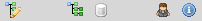
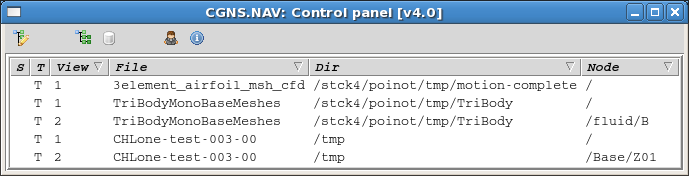
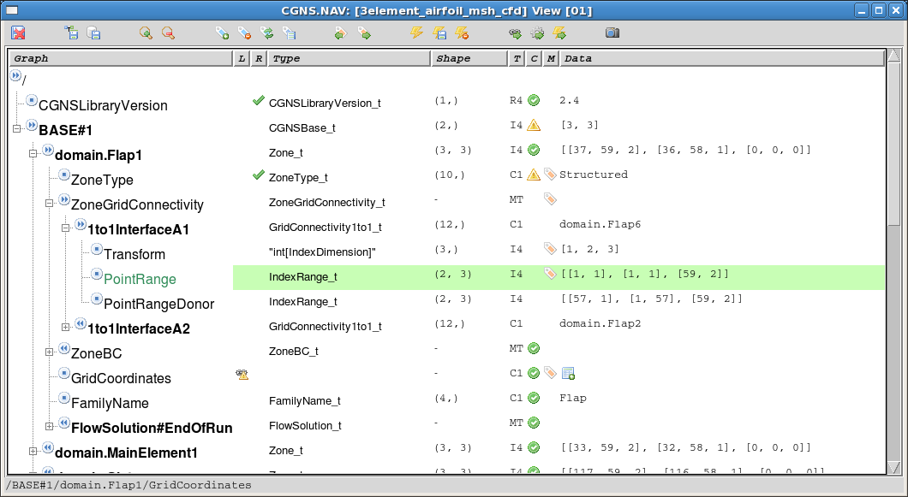
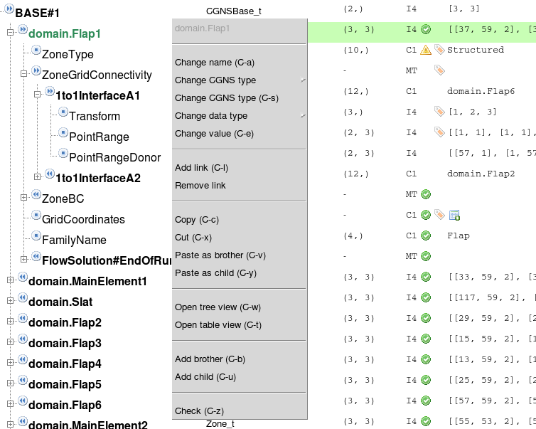

QuickStart¶
The first window you see when you start CGNS.NAV is the Control View.
This main view helps you to find out the views you have and on which
CGNS tree they refer to.
{kind=link}
If you select the line of an existing view in the Control view and press Return, this view will be raised on your screen. You can find back the Control view from any other view just pressing the BackSpace key (See Key/Mouse Bindings).
{kind=link}
From its icon menu you can create a new CGNS/Python tree, you can Load
an existing file or open the Pattern View. There is also an icon for
the Option View and an info about CGNS.NAV version.
Each time you open a view on a file, the Control keeps track of it, you can check all the views you may have on the same file.
{kind=link}
The columns of the lines you see in this Control view are:
- S status flag, says if you tree has been modified and needs a save
- T type of view, in this case you only have tree views
- The number of the view if youhave many views for the same CGNS tree
- The file name (when you create from scratch we propose a default name)
- The directory where you loaded/saved the file
- The root node of the view
The Tree View appears when you create a new tree or when you open an existing one. The tree below is a large one and we have a lot of information.
{kind=link}
You click on the +/- icon before any node name in the tree to open/close the child sub-tree for this node. A mouse left button simpple click on a node selects the node. A mouse right button simple click opens the menu for the selected node. The menu gives you access to some function such as Copy/Paste, change node name, type, add a child... Most of these functions have keyboard shortcuts.
{kind=link}